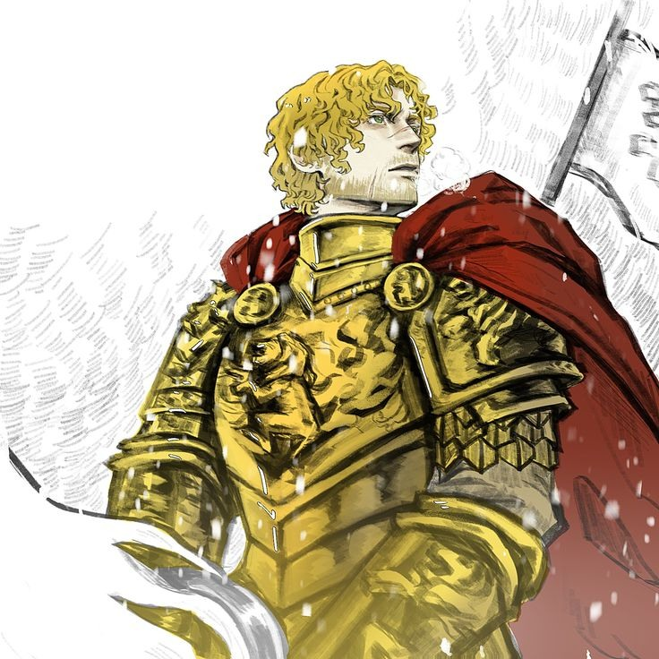

| Léonard Lambert | the Warlord of the Lamberts House Lambert of Sallowgate, the Holy Sea of Alabaster as of the white shelf above Sallowgate, the morning of the first snow, under the house banner |
| Epithet | the Bear Who Counts every camp south of the Moto border says it, and generals say it with their teeth shut; captains who have been counted in front of their own men call him the Granary, for the gold on his chest, and he has priced that joke for them too |
| Concept | He has already counted you, your army and your next move, and his count is never wrong. |
| Stat line | Stage VI Glory · Expert (Faceted) Level 190 · Refined · Muster-Master Body VI Mastered, I · Spirit V Walked 30%, unread · Fate Studied 15%, unread · Lenses: none on file, the Lambert inheritance and the house words in their place |
| Combat grammar | Blade; the counter-cut that has already started before your blow has |
| Aura and sound | a clean pale gold with a thin line of white through it, like the edge of the shelf with the sun behind it sound: a coin set down on stone, then another, counted |
| How he moves | tall and unhurried, wearing gilded plate the way other men wear a coat; he stands square in a middle guard with the gray sword held close, its weight back by the hand, and he waits, because the whole school is an answer and he must be asked first; when the blow comes his wrist has already turned, the flat meets your blade a hand from your guard, and the edge runs down it into the wrist, the elbow or the throat in one movement with no flourish and no second cut; he gives no ground he has not counted and takes none he cannot feed; he stands where the scarlet cloak makes him the easiest man on the field to find; between exchanges he taps the pommel and tells you, courteously, how many of you are left; the inside of his elbow, where the scaled lames stop, is the one place he guards with his feet; hurt, he goes on counting aloud, as his father did |
| Stack | sustainable at his means: Dexterity 116, Gnosis 97.5, Vitality 78, Resilience 81, Dominion 88 cap two steps on the hidden scale over the sustainable figure layers: ONE BEFORE’s one step of Reflex on the hidden scale against a blow with a will behind it; COUNT TRUE’s one step of Analysis and Forecast while he counts; no release, no Draft, no vow but the house words |
| Releases | none; Stage IV opened the door and he has not yet found what is behind it |
| Bonded weapon | none, the house sword is not bonded |
| Kit | a full harness of gilded plate with the Sallowgate bear rearing on the breast, a long scarlet cloak, the white banner with the balance above him, a plain gray house sword whose pommel he taps to count, and the piece people talk about first: the Bear Harness of the warlord’s office, Very Rare, whose gilding he will price for you to the copper |
| Voice | ”Before we begin, my lord: you have four thousand and eleven men, and nine hundred of them have not eaten since the feast of Saint Ebb. Now. What would you like to do?“ speaker type: a courteous southern warlord with a cleric’s Latin and a quartermaster’s honesty, who tells generals their own numbers in front of their captains |
| Field | Value |
|---|---|
| Full Name | Léonard Lambert |
| Court form | Leonardus Lambertus, Custos Portae Salicis, as the Alabaster Court enters him |
| Pronunciation | lay-oh-NAR LAHM-bair |
| Titles | Warlord of the Lamberts · Keeper of Sallowgate · Sword of the Bench · one of the Southern Warlords |
| Age | Fifty |
| Family | House Lambert of Sallowgate; the Hallenfeld Lamberts in the north are a cadet branch, and Osbert Lambert, the tariff-master, was his grandfather’s cousin |
| Realm / Faction | The Holy Sea of Alabaster and its land marches, held from Sallowgate for the Palatine at the Alabaster Court |
| Refusal | He will not give a false count, or take one, from anybody, the Palatine included |
| Conviction | A holy see weighs what men swear. Somebody has to count what they actually did |
| Field | Value |
|---|---|
| Level | 190; it holds Glory (115) and would hold Refraction (130), and no Residual Strain builds in him short of 200 |
| Temperance Stage | VI, Glory · Expert |
| Path | Body VI Mastered · Spirit V Walked 30% · Fate Studied 15%. Body is the sword, the harness and the answer. Spirit is the count, the reading of what a return means and whether it is true, and it is the Path behind: its gates open a Stage late and its Mastery has not yet taken a rung. |
| Mastery | Body I, Muridic: the lead, first read at Glory and capped there, and the rung his yield of 0.65 through the sword stands on · Spirit unread: Walked a rung behind a lead of I · Fate unread: Studied, two behind, with no grip by blood or blessing |
| Soul Crystal | Faceted, Refined |
| Class | Muster-Master, the soul’s name for a man who checks the roll against the men standing on the field; common among the Sea’s benches and quartermasters, and rare in a warlord · gives: the skill Counting a Field, already started when the name came · shapes: his points fall to the hand and the eye, and few to the pull · evolved from: nothing yet; it is the first name his soul has offered, at Glory, and it will evolve as his Body Mastery rises |
| Primary | Total |
|---|---|
| Vitality | 625 |
| Ardency | 450 |
| Gnosis | 780 |
| Dexterity | 930 |
| Harmonics | 300 |
| Resilience | 650 |
| Tempering | 300 |
| Dominion | 615 |
| Pool | 4,650, all spent |
| Peaks | Reflex and Forecast, the house’s; Analysis and Retention, the count; Command, a levy that is paid on the day |
| Measure | Figure |
|---|---|
| EU Reserve | 715,286 EU |
| Flux Density | 35,000 EU/g |
| AU/s | 22,750 · empties in 31.4 seconds at full output |
Traits
Full accounts: Léonard Lambert — Abilities
Every Trait reads at his lead Mastery, Body I.
| Trait | Kind | Source | Path and Form | Gates | What it does | Limit | Tell | Cost | Counter | Numbers |
|---|---|---|---|---|---|---|---|---|---|---|
| ONE BEFORE | Inherited | — | — | — | His answer starts a hair before your blow does, every time, so that men he has fought swear he struck first. (Inherited Trait) | It reads intent. It is slower against a thing with no will in it, a falling wall, a beast in a panic, a working that runs by itself, because where nobody decided anything there is nothing to read early, and he is left with only his ordinary quickness. | He moves a hair before you do. | Nothing, because nothing is made or thrown: it is an inheritance of the house and no Wellspring, and he no more spends reserve on it than a man spends reserve on hearing. | A blow with no intent behind it. | No reserve; Reflex one step high on the hidden scale against a blow with a will behind it. |
| COUNT TRUE | Primary | — | — | — | He looks at a field and says its number out loud, men and horses and remounts and the days of grain behind them, in front of everyone, and no lie about that field gets past him while he is counting. (Primary Trait) | Sight: he counts what he can see and what he is told, and a field he cannot see or a report never made is a hole in the sum, and a sum with a hole in it he will not call a count. | The saying: he gives the number aloud and taps the pommel. | Nothing. | A field he cannot see: night, fog, a reverse slope, a column that never came onto the roll. | No reserve; Analysis and Forecast one step high on the hidden scale while he counts. |
| THE STRUCK LIST | Secondary | — | — | — | He asks for the count twice, and the second asking has four struck names behind it; a man who lies to him then knows exactly what he is doing. (Secondary Trait) | It judges the number and not the reason: a true reason wrapped around a false number is still a false number, and the list has no column for mercy. | The second asking, in the same courteous voice, with his thumb on the underside of the pommel where the four notches are. | No reserve. | A man who gives him a true count, however bad, because there is then nothing on him for the list to weigh. | No reserve; four names struck. |
Skills and Abilities
Full accounts: Léonard Lambert — Abilities
Skills
| Skill | Cues / mechanics | Learned where | Priced by (Sub-Stats) | Rank |
|---|---|---|---|---|
| Sallowgate Sword | the long sword held close with its weight by the guard; the turn of the wrist, the flat a hand from the other man’s guard, the ride down into wrist, elbow or throat | the yard at Sallowgate, on a wooden copy of the house sword | Reflex, Finesse | Journeyman |
| Reading a Blow | waiting to be asked; watching the man and not the blade; answering the will and not the feint of the steel | the Lambert blood, and five years in the warlord’s seat | Reflex, Forecast | Apprentice |
| Counting a Field | men, horses, remounts and days of grain at a look; said aloud, never rounded, one tap of the pommel for every thousand | the bench-house at Sallowgate, beside the clerks | Analysis, Retention | Apprentice |
| Command of a Paid Levy | the scarlet cloak where his own men can find him and count him; a levy that is paid on the day stands on the day | his father’s campaigns, and his own since twenty-nine | Command | Apprentice |
| Fighting in Harness | full gilded plate carried like a coat; knowing where his own gap is, at the inside of the elbow | the Bear Harness, recut for him | Fortitude, Economy | Apprentice |
| Court Latin | the Court’s forms and the Bench’s entries, correct and unloved; in the field he forgets it | the Alabaster Court | Fluency | Apprentice |
Techniques
| Technique | Kind | Mark | Source | Path and Form | Gates | What it does | Limit | Tell | Cost | Counter | Numbers |
|---|---|---|---|---|---|---|---|---|---|---|---|
| COUNT TRUE | Signature art | — | — | Path Body for the Answer and the blood’s lean on his Reflex · Path Spirit for the count and the list · Lens the Lambert inheritance and the house words, no Wellspring · Form Strike (the Answer), Read (the rest) | none | He has already counted you, your army and your next move, and his count is never wrong | — | — | The Answer takes about one and a half percent of his reserve each time; the rest costs no reserve and is paid in people, because the count judges the number and never the reason, and there are four notches under his pommel to show it. | — | Sound: a coin set down on stone |
| THE SALLOWGATE ANSWER | House Art, Signature | Mastered | Taught | — | — | The house counter-cut: his blade turns before yours has left its line, takes it on the flat a hand from your guard, and rides down it into the wrist, the elbow or the throat. (House Art, Lambert · Signature) | It is an answer; he has to be asked first, and a man who will not attack him gives him nothing to answer. | The blade turns in his hand before yours leaves its line. | About one and a half percent of his reserve each time, near 11,000 EU, laid on the edge. | Feint with the whole body, so that the intent he reads is false, and then strike with no thought at all: a real decision to throw a false blow reads to the blood as a real blow, the Answer is paid out against it, and the stroke that follows comes off drilled habit with no fresh deciding in it for him to read. | each Answer: near 11,000 EU of 715,286 · about 66 Answers from a full reserve |
Physical Description
| Feature | Description |
|---|---|
| Build | He is tall and well made, broad in the chest and narrow in the waist, and carries his armor the way other men carry a coat. |
| Hair | His hair is a bright gold, thick and tightly curled, worn loose to the collar and always a little wild. |
| Face and eyes | His face is open and square-jawed, fair-skinned and windburned at the cheekbones, with a short gold stubble along the jaw and a straight nose, and his eyes are a clear light green that look past the man in front of him to count the men behind. |
| Field harness | In the field he wears a full harness of gilded plate, the breastplate worked in high relief with a rearing bear, the Sallowgate bear of the warlord’s office, round bosses at the shoulders, a high gorget and lames down the arms scaled like a fish’s back; over it a long cloak of deep scarlet, and above him on a white field the house banner with the balance and the words, Count True, in black. |
Voice
| Field | Value |
|---|---|
| Speaker type | a courteous southern warlord |
| Notices first | how many, and how long they can last |
| Sentence length | long and polite, with a short true number in the middle of it |
| Contractions | sometimes; never when he is giving a count |
| Oaths | ”by the white shelf”; “on the Scale” |
| Latin | the Court’s, in the Court; in the field he forgets it |
| Habit | he taps the pommel of his sword once for every thousand when he counts aloud |
| Never says | ”about” |
| Sample line | ”I do not doubt your courage, my lord. I am only telling you how many of you there are.” |
Equipment
| Item | What it is | Grade | Rarity | Rung | Bonded |
|---|---|---|---|---|---|
| The Bear Harness | full gilded plate, the harness of the warlord’s office | B | Very Rare | Siegepiece | no |
| The house sword | Lambert long sword | B | Rare | Siegepiece | no |
| The scarlet cloak | long field cloak, kermes-dyed wool | plain | Rare | — | — |
| The Count True banner | white linen, black balance and black words | plain | Uncommon | — | — |
| The court dress | the white wool robe of the Custos Portae Salicis, and a plain iron ring | plain | Uncommon | — | — |
| Item | Stamp | Maker’s mark | Mass and balance | Against armor | Look | How shown off | What people say | Price |
|---|---|---|---|---|---|---|---|---|
| The Bear Harness | Instrument | the balance of the Holy Sea over a Sallowgate armorer’s stamp | — | — | its gap is the inside of the elbow, where the scaled lames stop | he carries it like a coat and does not mention it, until someone sneers, and then he tells them the number | that a man who lectures generals about grain wears a granary on his chest, to which he answers that it is four hundred and twelve gold and seven silver, that the leaf is eleven ounces, and that the Palatine has the receipt | — |
| The house sword | Instrument | the balance, small, under the guard | 1.4 kilograms, balanced close to the guard for the turn of the wrist the Answer needs | beats plate through Tempered, fails against Hallowed | gray steel with a plain cross and a flat disk pommel, not one speck of gold on it, the only unbright thing he wears; four small notches on the underside of the pommel, one for each name he has struck, the fourth cut deeper than the others | he taps the pommel once for every thousand, in front of your captains | every child at Sallowgate learns on a wooden copy of this balance, and nobody who has counted the notches asks about them twice | worth about sixty gold |
| The scarlet cloak | — | — | — | — | a deep hot scarlet that holds snow on it like a tablecloth, clasped under the shoulder bosses and long enough to need a squire in mud; mended twice at the hem by his quartermaster, who entered the thread | he wears it where it makes him the easiest target on the field, so that his own men can find him and count him | it cost what a good horse costs, and he knows which horse | about forty gold |
| The Count True banner | — | — | — | — | carried by his bannerman relettered every year by the house clerk, one small black stitch in the hoist for every field it has stood over, and nobody has ever found the number wrong | — | a general who sees it come over the hill starts adding up his own men | — |
| The court dress | — | — | — | — | white wool, the collar worked with sallow leaves in pale gold thread, cut for a narrower generation of Lamberts; the ring is black iron, cut with the balance | he wears it to the Alabaster Court like a man carrying someone else’s parcel, and is in plate again before the Latin has finished | the Bench would like him to wear it more often, and the Bench has been told how often that is | — |
Lore
Full account: Léonard Lambert — Lore
Ties
| Person | Who they are to him |
|---|---|
| the Palatine of the Holy Sea | whom he serves and does not flatter |
| Osbert Lambert | his grandfather’s cousin, the tariff-master at Hallenfeld |
| his cousin | struck from the house |
| the Southern Warlords | at whose table he sits |
| Muken Moto | whom he has not met and is counting |